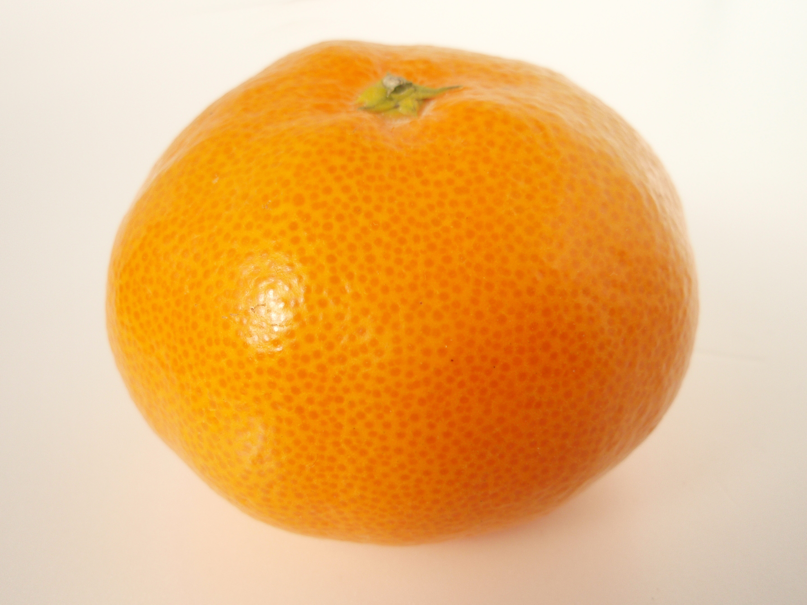

みかん（ウンシュウミカン）
説明
ウンシュウミカンとはミカン科の常緑低木またはその果実のこと．日本で一般的にみかんと呼ばれ，さまざまな栽培品種が販売されている．
柑橘系の特徴
オレンジと比較すると果肉は柔らかく，甘味がある．安価で親しみやすい果物として多くの人に食されている． また日本には，こたつに入りながらみかんを食べる習慣「こたつで（に）みかん」があり，日本の文化の1つとなっている．
ウンシュウミカンとはミカン科の常緑低木またはその果実のこと．日本で一般的にみかんと呼ばれ，さまざまな栽培品種が販売されている．
オレンジと比較すると果肉は柔らかく，甘味がある．安価で親しみやすい果物として多くの人に食されている． また日本には，こたつに入りながらみかんを食べる習慣「こたつで（に）みかん」があり，日本の文化の1つとなっている．